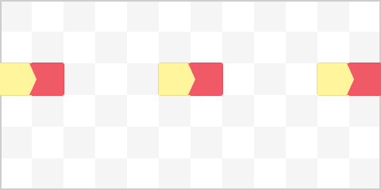

Nomenclature
Names
Without Names, automata would just be lifeless blocks of clay and metal. By inserting a Name into an automaton, you can make it come to life and work for you.
Each Name consists of up two seventy-two letters, arranged in six rows of twelve. To the uneducated reader, these letters may seem utterly random. But through advancements in nomenclature, the science of creating Names, scholars have discovered that Names are made from Epithets, each designating a specific trait or capability.
When written correctly, a name describes the very essence of the object imbued with it. According to A Boy’s Guide to Nomenclature, current thinking holds that there is a lexical universe as well as a physical one, and bringing an object together with a compatible name causes the latent potentialities of both to be realized. There is no single "true name" for a given object: depending on its precise shape, a body might be compatible with several names, known as its "euonyms," and conversely a simple name might tolerate significant variations in body shape.
Lexical Charges
The current understanding of the lexical realm has it that when a Name is inserted into an automaton, it operates by traversing lexical charges across the name. There are two types of charges: weak charges and strong charges.
Weak lexical charges on their will immediately disperse. Strong lexical charges however can sustain themselves indefinitely - if a letter becomes strongly charged, it will usually remain so until the charge is removed by Traversion.
Traversion
Traversion of charges occurse when a weakly charged letter neighbours a strongly charged one. The weakly charged letter will disperse it's charge and become uncharged as usual. However the strong charge will ignite the neighbouring letter -- in the direction opposite of the weak charge -- to become strongly charged, and partially discharge itself, becoming weakly charged.
In effect, that means that a weak charge neighbouring a strong charge will "travel" across the name:

Note that charges that reach the boundaries of the name will actually disperse.
Epithets
Epithets are the basic components that Names are made of. Through your pursuit of nomenclature, you will learn to combine these Epithets to make proper Eyonyms for your automata.
Life
The Life epithet, designated by the letter L, is the simplest and most vital one. When placed in a name, it periodically creates a weak charge:

Since weak charges can't sustain themselves, the Life epithet is usually accompanied by an Amplification epithet:
Amplification
The Amplification epithet, designated by the letter A, is a basic transducer. When one of its neighbouring epithets exhibit a weak charge, the Amplification epithet will immediately get strongly charged, effectively allowing the charge to travel across the name:

Movement
The Movement epithet, designated by the letter M, might be the most studied epithets of all time. It is incredibly versatile in that it works on most bodies that possess some form of limb, even snake-like crawlers. It has to be placed in the area of the name corresponding to the limb for the body to accept the name. When activated with a strong lexical charge, the Movement epithet will consume the charge and move the automaton forward. As such, it belongs to the class of Non-Traversing Epithets.

Concurrence
The Concurrence epithet, designated by the letter C, imbues the automaton with the possibility of simultaneous actions. When strongly charged, it will create two strong charges perpendicular to the direction the charge was travelling from.

Silence
The Silence epithet, designated by a S, is non-traversing and can never be charged. Any strong charge traversing into a Silence epithet will immediately disperse.
Restraint
The Restraint epithet, designated by a R, will only traverse every second time it gets strongly charged. Every other time, it will disperse che charge.
Writing Names in ShellCraft
Each name is a string of 72 characters, usually given as 6 rows of 12 epithets. An example of a simple mover would be this:
············
············
·LA···M·M·D·
············
············
············
The Life epithet (L) generates a charge, and Amplify (A) send it traversing to the right. There it will hit two Movement (M) Epithets which could send the automaton forward before hitting the Turn epithet D that will turn the automaton to the left. Note that , *, ., and · are all valid blank characters.
Short codes
For convenience, all names may be expressed with short codes. In short codes, all blank characters are replaced by a number indicating the number of blank characters. The example above contains 27 blank characters before the Life epithet, 37 after the Turn epithet, and a few single blanks in between, so we could express it as 27LA3M1M1D37. Trailing blank characters can also be ignored, and we can use a space or blank character instead of numbers where it improves clarity, so the previous expression is identical to 27LA3M·M·D, or 27LA3M M*D for that matter.